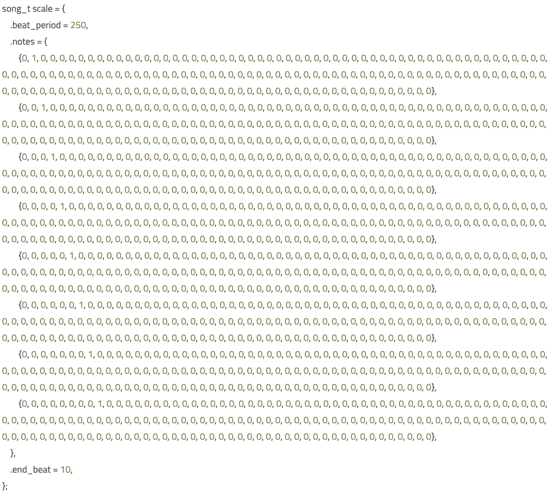
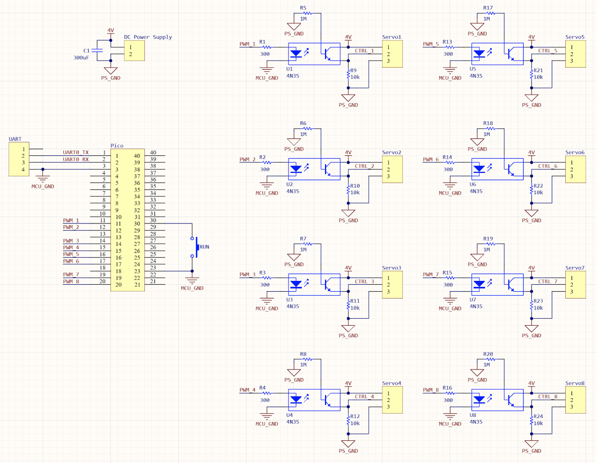

Appendix A
"The group approves this report for inclusion on the course website."
"The group approves the video for inclusion on the course youtube channel."
Appendix B
xylophone.c
/**
* Self-Playing Xylophone
* Karina Melgar (kmm477), Zoe Chen (zmc6), and Harris Miller (hwm44)
*
* Based on code provided by V. Hunter Adams (vha3)
*
* HARDWARE CONNECTIONS
* - GPIO 16 ---> VGA Hsync
* - GPIO 17 ---> VGA Vsync
* - GPIO 18 ---> 330 ohm resistor ---> VGA Red
* - GPIO 19 ---> 330 ohm resistor ---> VGA Green
* - GPIO 20 ---> 330 ohm resistor ---> VGA Blue
* - GPIO 8 ---> PWM output 1 (4A) [pin 11]
* - GPIO 9 ---> PWM output 2 (4B) [pin 12]
* - GPIO 10 ---> PWM output 3 (5A) [pin 14]
* - GPIO 11 ---> PWM output 4 (5B) [pin 15]
* - GPIO 12 ---> PWM output 5 (6A) [pin 16]
* - GPIO 13 ---> PWM output 6 (6B) [pin 17]
* - GPIO 14 ---> PWM output 7 (7A) [pin 19]
* - GPIO 15 ---> PWM output 8 (7B) [pin 20]
*
* Notes: do not trigger more than 4 servos at once
* - causes major instability + timing loss
*/
// Standard libraries
#include <stdio.h>
#include <stdlib.h>
#include <math.h>
#include <string.h>
// Pico libraries
#include "pico/stdlib.h"
#include "pico/multicore.h"
#include "hardware/pwm.h"
#include "hardware/irq.h"
// Protothreads
#include "pt_cornell_rp2040_v1.h"
// Custom headers
#include "music.h"
// PWM wrap value and clock divide value
// For a CPU rate of 125 MHz, this gives
// a PWM frequency of 50 Hz.
#define WRAPVAL 50000
#define CLKDIV 50.0f
#define FREQ (50000/20)
#define NUM_SERVOS 8
// Xylophone servo state machine enum
typedef enum {
WAIT = 0,
STRIKE_DOWN,
STRIKE_UP,
} xylo_state_t;
// PWM channel and state information
// ordered from lowest to highest pitch
uint slice_num[NUM_SERVOS];
volatile uint XYLO_STATE[NUM_SERVOS] = {WAIT,WAIT,WAIT,WAIT,WAIT,WAIT,WAIT,WAIT};
const uint PWM_CHAN[NUM_SERVOS] = {PWM_CHAN_A, PWM_CHAN_B, PWM_CHAN_A, PWM_CHAN_B, PWM_CHAN_A, PWM_CHAN_B, PWM_CHAN_A, PWM_CHAN_B};
const uint UP[NUM_SERVOS] = {4500, 3300, 3700, 4100, 3600, 2900, 3700, 3700};
const uint DOWN[NUM_SERVOS] = {4900, 3700, 4100, 4550, 3200, 2500, 3300, 3200};
// PWM duty cycle storage
volatile int control[NUM_SERVOS] = ;
volatile int old_control[NUM_SERVOS] = ;
// timer storage
volatile uint counter = 0;
volatile uint beat = 0;
// Current song pointer
volatile song_t* curr_song = NULL;
// PWM interrupt service routine
void on_pwm_wrap() {
for(size_t i = 0; i < NUM_SERVOS; i++){
// Update duty cycle
if (control[i] != old_control[i]) {
old_control[i] = control[i] ;
// set specific PWM channel given slice, channel (A/B), and value
pwm_set_chan_level(slice_num[i], PWM_CHAN[i], control[i]);
}
}
for(size_t i = 0; i < NUM_SERVOS; i++){
// clear all IRQs
pwm_clear_irq(slice_num[i]);
}
}
// Timer ISR
bool repeating_timer_callback(struct repeating_timer *t) {
// increase counter on IRQ
counter++;
// if song loaded and beat period expired:
if (curr_song != NULL && counter >= curr_song->beat_period) { // 1000 --> 60 bpm, strike every second
// reset counter
counter = 0;
// if beat period is valid (non-zero)
if(curr_song->beat_period != 0) {
// initiate strike for any servos for this beat
for(size_t i = 0; i < NUM_SERVOS; i++) {
if(curr_song->notes[i][beat]) {
XYLO_STATE[i] = STRIKE_DOWN;
}
}
// increase beat counter
beat++;
// if no beats remaining
if(beat >= curr_song->end_beat) {
// destroy pointers
curr_song = NULL;
// reset beat counter
beat = 0;
}
}
}
return true;
}
// User input thread
static PT_THREAD (protothread_serial(struct pt *pt)) {
PT_BEGIN(pt);
// stores user input
static uint user_input ;
// wait
PT_YIELD_usec(1000000) ;
// write song list:
sprintf(pt_serial_out_buffer, "\r\n");
serial_write ;
sprintf(pt_serial_out_buffer, "0) Scale\r\n");
serial_write ;
sprintf(pt_serial_out_buffer, "1) Happy Birthday\r\n");
serial_write ;
sprintf(pt_serial_out_buffer, "2) Wii Sports Theme\r\n");
serial_write ;
sprintf(pt_serial_out_buffer, "3) Cornell Alma Mater\r\n");
serial_write ;
sprintf(pt_serial_out_buffer, "4) Chopsticks\r\n");
serial_write ;
sprintf(pt_serial_out_buffer, "5) Jingle Bells\r\n");
serial_write ;
sprintf(pt_serial_out_buffer, "6) Old MacDonald\r\n");
serial_write ;
sprintf(pt_serial_out_buffer, "7) Chords\r\n");
serial_write ;
sprintf(pt_serial_out_buffer, "8) Baby Shark\r\n");
serial_write ;
sprintf(pt_serial_out_buffer, "9) Dreidel\r\n");
serial_write ;
sprintf(pt_serial_out_buffer, "10) Surprise :)\r\n");
serial_write ;
sprintf(pt_serial_out_buffer, "11) Twinkle Twinkle Little Star\r\n");
serial_write ;
sprintf(pt_serial_out_buffer, "12) The Office Theme\r\n");
serial_write ;
sprintf(pt_serial_out_buffer, "13) I Want You Back\r\n");
serial_write ;
sprintf(pt_serial_out_buffer, "14) A Thousand Miles\r\n");
serial_write ;
sprintf(pt_serial_out_buffer, "15) A Whole New World\r\n");
serial_write ;
sprintf(pt_serial_out_buffer, "16) Carol of the Bells\r\n");
serial_write ;
sprintf(pt_serial_out_buffer, "17) Leave the Door Open\r\n");
serial_write ;
sprintf(pt_serial_out_buffer, "18) Love Story\r\n");
serial_write ;
sprintf(pt_serial_out_buffer, "19) Mario\r\n");
serial_write ;
sprintf(pt_serial_out_buffer, "20) Ode to Joy\r\n");
serial_write ;
sprintf(pt_serial_out_buffer, "21) Spring\r\n");
serial_write ;
sprintf(pt_serial_out_buffer, "22) Star Wars\r\n");
serial_write ;
while(1) {
// print prompt
sprintf(pt_serial_out_buffer, "Enter song number to play: ");
// non-blocking write
serial_write ;
// spawn a thread to do the non-blocking serial read
serial_read ;
// convert input string to int
sscanf(pt_serial_in_buffer, "%d", &user_input) ;
// confirm value before indexing (prevents out-of-bounds)
if(user_input < NUM_SONGS) {
curr_song = song_list[user_input];
}
} // END WHILE(1)
PT_END(pt);
} // serial thread
// Strike down/up thread
static PT_THREAD (protothread_play(struct pt *pt)) {
PT_BEGIN(pt) ;
// play control loop
while(1) {
// loop over all servos
for(size_t i = 0; i < NUM_SERVOS; i++){
// initiate strike when commanded
if(XYLO_STATE[i] == STRIKE_DOWN){
control[i] = DOWN[i];
XYLO_STATE[i] = STRIKE_UP;
// initiate lift when timer expires
} else if(XYLO_STATE[i] == STRIKE_UP && counter >= 70){
control[i] = UP[i];
XYLO_STATE[i] = WAIT;
}
}
// yield to allow serial input
PT_YIELD_usec(10000) ;
}
PT_END(pt) ;
}
int main() {
// Initialize stdio
stdio_init_all();
// init servo PWM values to resting position
for(size_t i = 0; i < NUM_SERVOS; i++){
control[i] = UP[i];
}
////////////////////////////////////////////////////////////////////////
///////////////////////// PWM CONFIGURATION ////////////////////////////
////////////////////////////////////////////////////////////////////////
uint32_t mask = 0;
for(size_t i = 0; i < NUM_SERVOS; i++){
// Tell GPIO that it is allocated to the PWM
gpio_set_function(i+8, GPIO_FUNC_PWM);
// Find out which PWM slice is connected to GPIO 8-15
slice_num[i] = pwm_gpio_to_slice_num(i+8);
// Mask our slice's IRQ output into the PWM block's single interrupt line,
// and register our interrupt handler
pwm_clear_irq(slice_num[i]);
pwm_set_irq_enabled(slice_num[i], true);
// This section configures the period of the PWM signals
pwm_set_wrap(slice_num[i], WRAPVAL) ;
pwm_set_clkdiv(slice_num[i], CLKDIV) ;
// This sets duty cycle
pwm_set_chan_level(slice_num[i], PWM_CHAN[i], FREQ);
mask |= (1u << slice_num[i]);
}
irq_set_exclusive_handler(PWM_IRQ_WRAP, on_pwm_wrap);
irq_set_enabled(PWM_IRQ_WRAP, true);
// Start the channel
pwm_set_mask_enabled(mask);
// Create a repeating timer that calls repeating_timer_callback.
// If the delay is > 0 then this is the delay between the previous callback ending and the next starting.
// If the delay is negative (see below) then the next call to the callback will be exactly x us after the
// start of the call to the last callback
struct repeating_timer timer;
// Negative delay so means we will call repeating_timer_callback, and call it again
// 1000us (1kHz) later regardless of how long the callback took to execute
add_repeating_timer_us(-1000, repeating_timer_callback, NULL, &timer);
// start protothreads
pt_add_thread(protothread_serial) ;
pt_add_thread(protothread_play) ;
pt_schedule_start ;
}
music. h
#ifndef _MUSIC_H_
#define _MUSIC_H_
#include "pico/stdlib.h"
// Song definition macros
#define MAX_LEN 160
#define NUM_SERVOS 8
#define NUM_SONGS 23
// Song struct definition
typedef struct {
uint beat_period;
uint notes[NUM_SERVOS][MAX_LEN];
uint end_beat;
} song_t;
// store song pointers in array
extern song_t* song_list[NUM_SONGS];
// songs as extern (defined by c file)
// allows inclusion into xylophone.c
extern song_t alma_mater;
extern song_t baby_shark;
extern song_t carol_of_the_bells;
extern song_t chopsticks;
extern song_t chords;
extern song_t dreidel;
extern song_t happy_birthday;
extern song_t jingle_bells;
extern song_t leave_the_door_open;
extern song_t love_story;
extern song_t mario;
extern song_t ode_to_joy;
extern song_t office;
extern song_t old_mcdonald;
extern song_t rick_roll;
extern song_t scale;
extern song_t spring;
extern song_t star_wars;
extern song_t thousand_miles;
extern song_t twinkle;
extern song_t whole_new_world;
extern song_t wii_sports;
extern song_t want_u_back;
#endif
music. c
#include "music.h"
// store song pointers in array
// indexable by program selector
song_t* song_list[NUM_SONGS] = {
&scale,
&happy_birthday,
&wii_sports,
&alma_mater,
&chopsticks,
&jingle_bells,
&old_mcdonald,
&chords,
&baby_shark,
&dreidel,
&rick_roll,
&twinkle,
&office,
&want_u_back,
&thousand_miles,
&whole_new_world,
&carol_of_the_bells,
&leave_the_door_open,
&love_story,
&mario,
&ode_to_joy,
&spring,
&star_wars,
};

Appendix C

Figure 11. Electrical schematic for our final project.
Appendix D
Karina
Music arrangement
Optoisolator circuit assembly
Zoe
Mechanical design
Servo electrical integration
Servo damping
Harris
Mechanical fabrication
Music data management
Timing management
Appendix E